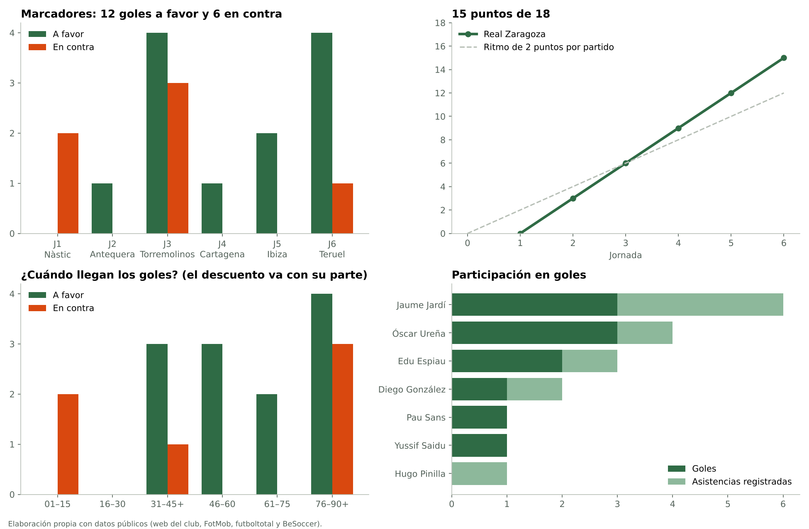
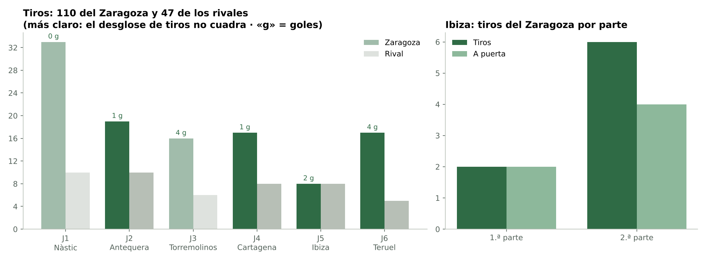
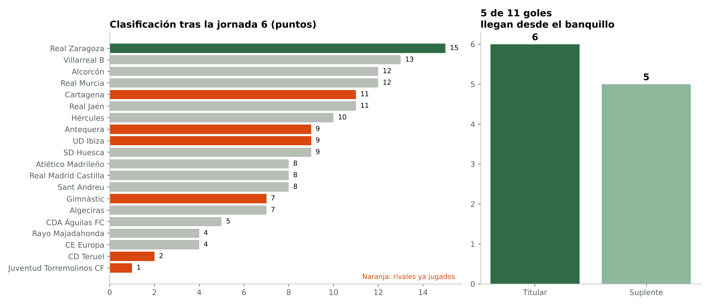
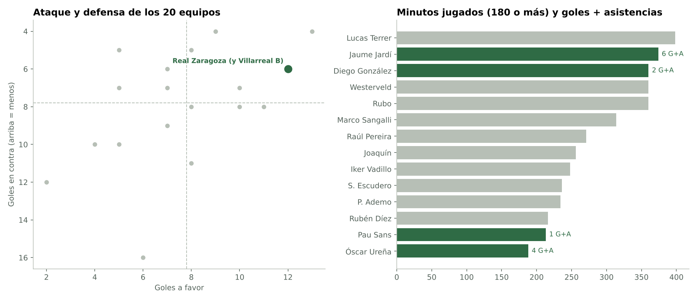

Proyectos / Real Zaragoza 2026/27 / Informe completo
Informe completo · Primera Federación, grupo 2
Real Zaragoza 2026/27 tras la jornada 6
Datos de los 6 partidos de liga jugados hasta el 4 de octubre de 2026. Todo sale de fuentes públicas, contrastadas entre sí.
Conclusiones
Qué dicen los datos
Líder tras seis jornadas. Después de perder en Tarragona, el Zaragoza ha ganado los cinco partidos siguientes. Suma 15 puntos, dos más que el Villarreal B. Son 2,5 puntos por partido, pero con seis jornadas es pronto para proyectar nada.
Un calendario asequible hasta ahora. La posición media de los rivales que ya ha jugado es la 12,5 de 20: entre ellos están los dos últimos, Torremolinos y Teruel. Ahora llegan tres salidas seguidas (Atlético Madrileño, 11.º; Real Murcia, 4.º; CE Europa, 18.º) y después recibe al Villarreal B, 2.º.
En casa, pleno. Nueve puntos de nueve y 6-1 en goles. Fuera ha sumado seis puntos, con 6-5. Cinco de los seis goles encajados han llegado lejos de Zaragoza, casi todos en Tarragona y en Torremolinos.
El banquillo marca. Cinco de los once goles de jugadores del Zaragoza los han marcado futbolistas que salieron desde el banquillo: Espiau en el 90+1 ante el Antequera, Saidu en Torremolinos, Ureña dos veces en Ibiza nada más entrar y Pau Sans ante el Teruel. Es un patrón llamativo, pero con estos datos no se puede decir que los cambios sean la causa.
Más goles después del descanso. Nueve de los doce goles a favor llegan en la segunda parte, lo que encaja con lo anterior.
Jardí y Ureña. Jaume Jardí participa en seis de los doce goles (tres goles y tres asistencias). Óscar Ureña suma tres goles y una asistencia en 188 minutos con alineación conocida: una participación cada 47 minutos, la mejor relación de la plantilla.
Tira mucho más que sus rivales. 110 tiros frente a 47 en los seis partidos, el 70 % del total. El caso más claro es Tarragona: 33 tiros contra 10 y un 75 % de posesión, y aun así perdió 2-0.
Comparado con el grupo. Es el 2.º equipo que más goles marca (empatado con el Villarreal B) y el 5.º que menos encaja. El liderato se apoya más en ganar partidos ajustados que en una defensa muy por encima del resto.
Los finales, a vigilar. Tres de los seis goles encajados llegan a partir del minuto 76. Dos fueron en Torremolinos, donde un 4-1 acabó en 4-3. Además, dos de los seis goles en contra han sido de penalti.
Ibiza, por partes. Es el único partido con estadísticas separadas por partes. En la segunda el Zaragoza pasó de dos a seis tiros y de dos a cuatro a puerta, con menos posesión (del 59 % al 54 %) y menos pases (de 281 a 230). Los dos goles llegaron justo después de los cambios del 57. Es una hipótesis para revisar en vídeo, no una conclusión.
Disciplina. 22 amarillas en seis partidos (3,7 por partido) y ninguna roja.
Gráficos
Resultados y goles

Tiros

Clasificación y banquillo

El grupo y la plantilla

Tablas
Goles a favor
| J | Rival | Min. | Goleador | Asistencia | Rol | Penalti | P. p. |
|---|---|---|---|---|---|---|---|
| 2 | Antequera CF | 90+1 | Edu Espiau | — | Suplente | — | — |
| 3 | Juventud Torremolinos CF | 35 | Javi Cuenca | — | — | — | Sí |
| 3 | Juventud Torremolinos CF | 38 | Diego González | Jaume Jardí | Titular | — | — |
| 3 | Juventud Torremolinos CF | 65 | Jaume Jardí | — | Titular | — | — |
| 3 | Juventud Torremolinos CF | 81 | Yussif Saidu | Jaume Jardí | Suplente | — | — |
| 4 | FC Cartagena | 51 | Jaume Jardí | Óscar Ureña | Titular | — | — |
| 5 | UD Ibiza | 59 | Óscar Ureña | Edu Espiau | Suplente | — | — |
| 5 | UD Ibiza | 62 | Óscar Ureña | — | Suplente | — | — |
| 6 | CD Teruel | 45+7 | Óscar Ureña | — | Titular | — | — |
| 6 | CD Teruel | 47 | Edu Espiau | Diego González | Titular | — | — |
| 6 | CD Teruel | 77 | Pau Sans | Jaume Jardí | Suplente | — | — |
| 6 | CD Teruel | 85 | Jaume Jardí | Hugo Pinilla | Titular | — | — |
«Suplente» quiere decir que el goleador había entrado desde el banquillo. Las asistencias son las que recoge futboltotal, que no las apunta todas.
Minutos de la plantilla
| Jugador | PJ | Titular | Minutos | Goles | Asist. | G+A por 90 |
|---|---|---|---|---|---|---|
| Lucas Terrer | 5 | 5 | 398 | 0 | 0 | 0 |
| Jaume Jardí | 5 | 4 | 374 | 3 | 3 | 0,72 |
| Diego González | 4 | 4 | 360 | 1 | 1 | 0,25 |
| Rubo | 4 | 4 | 360 | 0 | 0 | 0 |
| Westerveld | 4 | 4 | 360 | 0 | 0 | 0 |
| Marco Sangalli | 4 | 3 | 314 | 0 | 0 | 0 |
| Raúl Pereira | 5 | 2 | 271 | 0 | 0 | 0 |
| Joaquín | 4 | 2 | 256 | 0 | 0 | 0 |
| Iker Vadillo | 4 | 3 | 248 | 0 | 0 | 0 |
| S. Escudero | 5 | 4 | 236 | 0 | 0 | 0 |
| P. Ademo | 4 | 3 | 234 | 0 | 0 | 0 |
| Rubén Díez | 4 | 3 | 216 | 0 | 0 | 0 |
| Pau Sans | 4 | 2 | 213 | 1 | 0 | 0,42 |
| Óscar Ureña | 4 | 2 | 188 | 3 | 1 | 1,91 |
Jugadores con 180 minutos o más. Los minutos no incluyen los partidos sin alineación publicada; los goles y asistencias son de toda la liga.
Casa y fuera
| Sede | PJ | Puntos | GF | GC | Porterías a cero | Puntos por partido |
|---|---|---|---|---|---|---|
| Casa | 3 | 9 | 6 | 1 | 2 | 3 |
| Fuera | 3 | 6 | 6 | 5 | 1 | 2 |
Clasificación tras la jornada 6
| # | Equipo | PJ | G | E | P | GF | GC | DG | Pts |
|---|---|---|---|---|---|---|---|---|---|
| 1 | Real Zaragoza | 6 | 5 | 0 | 1 | 12 | 6 | 6 | 15 |
| 2 | Villarreal B | 6 | 4 | 1 | 1 | 12 | 6 | 6 | 13 |
| 3 | Alcorcón | 6 | 3 | 3 | 0 | 13 | 4 | 9 | 12 |
| 4 | Real Murcia | 6 | 4 | 0 | 2 | 10 | 7 | 3 | 12 |
| 5 | Cartagena | 6 | 3 | 2 | 1 | 9 | 4 | 5 | 11 |
| 6 | Real Jaén | 6 | 3 | 2 | 1 | 8 | 5 | 3 | 11 |
| 7 | Hércules | 6 | 3 | 1 | 2 | 5 | 5 | 0 | 10 |
| 8 | Antequera | 6 | 2 | 3 | 1 | 10 | 8 | 2 | 9 |
| 9 | UD Ibiza | 6 | 3 | 0 | 3 | 8 | 8 | 0 | 9 |
| 10 | SD Huesca | 6 | 2 | 3 | 1 | 7 | 7 | 0 | 9 |
| 11 | Atlético Madrileño | 6 | 2 | 2 | 2 | 11 | 8 | 3 | 8 |
| 12 | Real Madrid Castilla | 6 | 2 | 2 | 2 | 7 | 6 | 1 | 8 |
| 13 | Sant Andreu | 6 | 2 | 2 | 2 | 7 | 7 | 0 | 8 |
| 14 | Gimnàstic | 6 | 2 | 1 | 3 | 7 | 9 | -2 | 7 |
| 15 | Algeciras | 6 | 2 | 1 | 3 | 8 | 11 | -3 | 7 |
| 16 | CDA Águilas FC | 6 | 1 | 2 | 3 | 5 | 10 | -5 | 5 |
| 17 | Rayo Majadahonda | 6 | 1 | 1 | 4 | 5 | 7 | -2 | 4 |
| 18 | CE Europa | 6 | 1 | 1 | 4 | 4 | 10 | -6 | 4 |
| 19 | CD Teruel | 6 | 0 | 2 | 4 | 2 | 12 | -10 | 2 |
| 20 | Juventud Torremolinos CF | 6 | 0 | 1 | 5 | 6 | 16 | -10 | 1 |
Calidad de los datos
Incidencias y decisiones
Cuando dos fuentes no coinciden, lo apunto aquí junto con el dato que me quedo. Un dato que no encuentro queda vacío: nunca lo convierto en un cero.
| Partido | Dato | Problema | Qué hago |
|---|---|---|---|
| General | Cobertura | No hay datos públicos fiables de coordenadas, tracking, distancias, velocidades ni PPDA | No se estiman ni se rellenan |
| General | Nombres | Cada fuente escribe los nombres a su manera: iniciales, apodos («Jamelli» es Rubén Díez y «J. Delgado» es Joaquín) | Uso siempre el nombre de la web del club |
| General | Asistencias | Solo futboltotal las recoge y faltan en las jornadas 1 y 2 y en algún gol suelto | Las trato como un mínimo, no como el total real |
| General | Agregados FootyStats | Sus tablas y su texto no coinciden en tiros ni en xG | No los uso |
| J1 | Minuto gol Carlos Segura | 87 en FotMob; 86 en futboltotal y FootyStats | Dejo el 87; no cambia el tramo |
| J1 | Tiros | El club da 33 tiros, pero 9 a puerta y 16 fuera suman 25 y no publica los bloqueados | Uso el total con aviso y no calculo la precisión de tiro de ese partido |
| J1 | Minutos de los cambios | Club 55/71/82; futboltotal 56/72/82-83 | Uso los minutos del club |
| J2 | Fecha | La URL de futboltotal dice 06/09 y la ficha dice 5/09 a las 21:00 | Dejo el 5/09 (FotMob y la propia ficha) |
| J2 | Pases | BeSoccer 510/256 y 452/181 completados; web del club 510/257 y 453/183 | Cada cálculo sale de una sola fuente |
| J2 | Paradas | Una parada con dos tiros a puerta del rival y ningún gol encajado | No uso las paradas |
| J2 | Penalti fallado | El Antequera falla un penalti en el 71 (futboltotal) | Lo anoto como contexto |
| J3 | Alineación | No he encontrado la alineación de Torremolinos en ninguna fuente fiable | La jornada 3 no entra en los minutos |
| J3 | Minuto gol en propia puerta | 35 en FotMob y en el club; 36 en FootyStats | Dejo el 35 |
| J3 | Tiros | El club da 16 tiros, pero 7 a puerta y 3 fuera no llegan al total | No deduzco los bloqueados |
| J4 | Estadísticas avanzadas | AupaZaragoza pone 1-0 al descanso con el gol en el 51, y no dice qué modelo de xG usa | Las guardo aparte y no saco conclusiones del xG |
| J4 | Expulsión rival | 49 en AupaZaragoza; 50 en FotMob | No relaciono la expulsión con el gol del 51 |
| J5 | Fecha | La URL de futboltotal dice 27/09 y la ficha dice 25/09 | Dejo el 25/09 (FotMob y la propia ficha) |
| J5 | Minuto primer gol | 58 en futboltotal; 58 o 59 en BeSoccer; 59 en FotMob | Dejo el 59 |
| J5 | Alineación | La web del club no publica la ficha; uso BeSoccer, que cuadra con los cambios de futboltotal | La doy por buena con dos fuentes coherentes |
| J6 | Minuto gol Ureña | La ficha del club pone 52; FotMob, futboltotal y el 1-1 al descanso dicen 45+7 | Dejo el 45+7 |
| J6 | Tiros a puerta | BeSoccer 7 (cuadra: 7 + 9 fuera + 1 bloqueado = 17); club 9 | Uso BeSoccer |
| J6 | Paradas | 1 y 5 no cuadran con los tiros a puerta (7 y 3) ni con el 4-1 | No uso las paradas |
| J6 | Minuto gol Pau Sans | 77 en FotMob; 76 en la crónica de radio | Dejo el 77 |
Método
Cómo está hecho
Los datos de cada partido los copio a mano de las fichas públicas. Un script de Python los cruza entre sí (goles con marcadores, cambios con alineaciones, tarjetas con estadísticas y clasificación con resultados) y no genera nada si algo no cuadra. Después calcula las tablas, dibuja los gráficos y monta esta página. Un segundo script en R repite los cálculos principales para comprobar que salen igual.
Fuentes
- https://www.fotmob.com/es/matches/real-zaragoza-vs-gimnastic/2byw33
- https://www.fotmob.com/es/matches/real-zaragoza-vs-antequera/6nntpao
- https://www.fotmob.com/es/matches/real-zaragoza-vs-juventud-torremolinos-cf/x6r0vf7
- https://www.fotmob.com/es/matches/real-zaragoza-vs-cartagena/2dikzw
- https://www.fotmob.com/es/matches/real-zaragoza-vs-ud-ibiza/8628l3cc
- https://www.fotmob.com/es/matches/real-zaragoza-vs-cd-teruel/91rtz0x
- https://www.realzaragoza.com/partidos/temporada-2026-2027-primera-federacion-1-gimnastic-de-tarragona-vs-real-zaragoza-3775
- https://www.realzaragoza.com/partidos/temporada-2026-2027-primera-federacion-2-real-zaragoza-vs-antequera-cf-3802
- https://www.realzaragoza.com/partidos/temporada-2026-2027-primera-federacion-4-real-zaragoza-vs-fc-cartagena-3837
- https://es.besoccer.com/partido/ibiza-eivissa/real-zaragoza/202724147/alineaciones
- https://www.realzaragoza.com/partidos/temporada-2026-2027-primera-federacion-6-real-zaragoza-vs-cd-teruel-3877
- https://futboltotal.futbol/partido/juventud-torremolinos-vs-zaragoza-primera-division-rfef-group-2-2026-09-13
- https://futboltotal.futbol/partido/gimnastic-vs-zaragoza-primera-division-rfef-group-2-2026-08-30
- https://futboltotal.futbol/partido/zaragoza-vs-antequera-primera-division-rfef-group-2-2026-09-06
- https://futboltotal.futbol/partido/zaragoza-vs-fc-cartagena-primera-division-rfef-group-2-2026-09-20
- https://futboltotal.futbol/partido/ibiza-vs-zaragoza-primera-division-rfef-group-2-2026-09-27
- https://futboltotal.futbol/partido/zaragoza-vs-teruel-primera-division-rfef-grupo-2-2026-10-04
- https://www.besoccer.com/match/real-zaragoza/antequera/202724015
- https://www.realzaragoza.com/partidos/temporada-2026-2027-primera-federacion-3-juventud-torremolinos-cf-vs-real-zaragoza-3815
- https://es.besoccer.com/partido/ibiza-eivissa/real-zaragoza/202724147
- https://pt.besoccer.com/jogo/real-zaragoza/teruel/202724205
- https://www.fotmob.com/es-419/teams/8394/overview